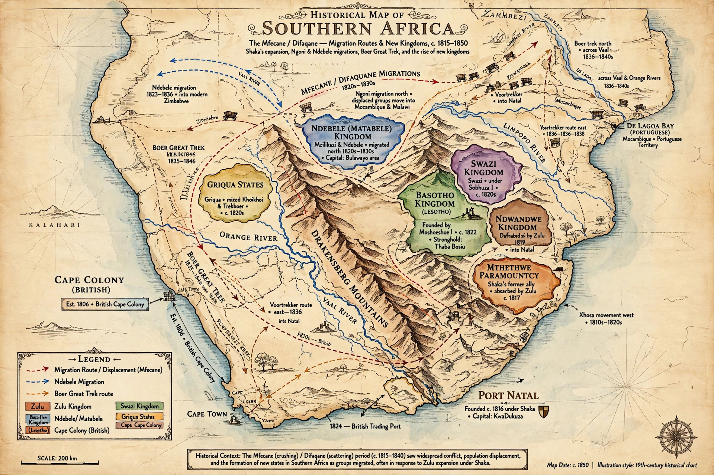

| Mfecane | |
|---|---|
| Period | c. 1815 – c. 1840 |
| Region | Southern Africa |
| Also known as | Difaqane (Sotho); Lifaqane |
| Key figures | Shaka, Mzilikazi, Moshoeshoe I, Sekwati |
The Mfecane (Zulu: mfecane, "the crushing"), also known by the Sotho name Difaqane or Lifaqane ("forced migration"), was a period of widespread chaos and warfare among indigenous peoples in southern Africa between about 1815 and 1840. It began in the region between the Tugela and Pongola rivers (in modern KwaZulu-Natal) and set off migrations that reshaped the political map as far north as present-day Zimbabwe, Zambia, Malawi, Mozambique, and Tanzania.
Historians have debated the causes. The traditional account centres on the rise of Shaka and the Zulu Kingdom, whose expansion drove defeated groups outward in a chain reaction of conquest and flight. Other explanations emphasise population growth on well-watered coastal lands, competition for trade (especially in ivory) with the Portuguese at Delagoa Bay, drought and famine in the early 1800s, and the disruptive effects of the slave trade. The historian Julian Cobbing controversially argued that the Mfecane was largely a myth masking slaving and colonial land-grabbing — a thesis that sparked intense scholarly debate.
Groups displaced by the wars formed new states: Mzilikazi's Ndebele (Matabele) kingdom in present-day Zimbabwe; Moshoeshoe I's Basotho kingdom in the mountains of Lesotho, which survived by diplomacy and defensible strongholds like Thaba Bosiu; the Gaza kingdom in Mozambique under Soshangane; the Kololo in Zambia; and the Ngoni migrations reaching Malawi and Tanzania. Vast areas of the highveld were left depopulated in the 1820s–30s, a fact later used by Voortrekker and colonial narratives to justify occupation of supposedly "empty" land — a claim modern historians treat with caution.
Whatever its causes, the Mfecane militarised and centralised many African societies and left a lasting mark on the ethnic and political geography of southern Africa.